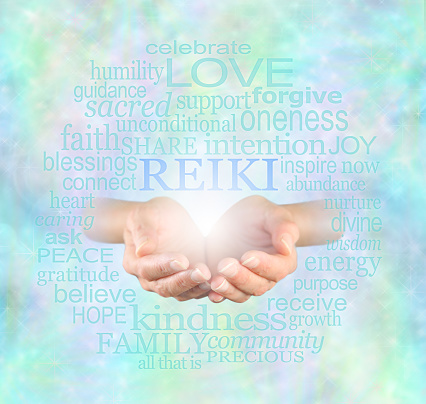

REIKI A TU HOGAR

Que es reiki
es un tipo de medicina alternativa japonesa considerada como pseudoterapia1 englobada dentro de las "terapias de energía". Sus practicantes utilizan la imposición de manos o el toque terapéutico para desde las palmas transferir una "energía universal" (qì) hacia el paciente con el fin de promover la curación emocional o física.

Nuestra filosofia
Para nosotros lo mas importante es la salud de nuestro paciente es por esto que realizamos las terapias directo en tu hogar para que no tengas que hacer mayor esfuerzo en esta nueva etapa de tu vida